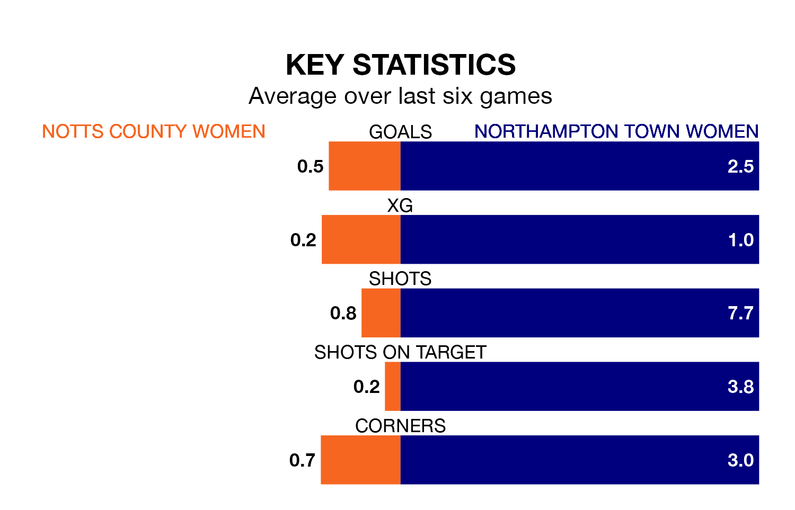

Notts County Women are on a terrible run ahead of hosting Northampton Town Women on Sunday, with just two points collected from their last six games.
Notts County have picked up two draws and four losses in their last six Women's National League Division One – Midlands games, and face a Northampton Town side whose last six games have brought four wins and two losses.
With 13 goals in 13 games so far this season, Notts County are the league's third-lowest scorers with 1.0 goals per game. And they are conceding more than average, letting in 44 goals at a rate of 3.4 per game.
Northampton Town, meanwhile, are above average scorers, with 2.1 goals per game, compared to a league average of 1.8. They have also conceded 2.1 goals per game.
The home team are 10th in the table after 13 games, of which they have won two and drawn three, earning nine points.
The visitors are five places ahead of Notts County in fifth, with six wins and one draw putting them on 19 points.
Notts County's last match was on January 21, a 0-0 draw against Sutton Coldfield Town Women.
Northampton Town lost 1-0 against Loughborough Lightning Women last time out, on January 14.
Updated: 09:21 (UTC), 30/01/24